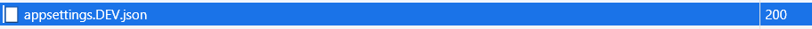

Recently, we had an opportunity to build a brand new application for a subset of our customers. It seemed like a perfect opportunity to try Blazor in a production setting as the application was not going to be too large (famous last words:)).
One of the things we had to figure out was how to determine environments within the Blazor Web Assembly application. The Blazor Web Assemlby project supports appsettings.json files, which has to be created in the wwwroot folder inside the WASM project. When a request comes into the application, the appsettings.json file is sent as part of the first package that gets downloaded.
We had to figure out how to push the appsettings.DEV.json and appsettings.PRD.json files from our various environments. These files can have things like the environment specific API Url.
By default, when we publish a WASM project, it generates a web.config inside the output folder, which has a bunch of things that allow for the WASM application to be served correctly. To setup the correct environment, we have to send a custom header named blazor-environment. The WASM application then uses this to determine which appsettings file to use.
For instance in our case we ended up adding this to the generated web.config file during our publish process
<httpProtocol>
<customHeaders>
<add name="blazor-environment" value="DEV" />
</customHeaders>
</httpProtocol>
When we add this, the appropriate appsettings file is also pushed with the first download.

We added the default web.config into our WASM project and also added the specific web.DEV.config and web.PRD.config. We also updated the WASM csproj file to have the following target added and utilized the Microsoft.DotNet.Xdt.Tools nuget package to perform our config transforms. We just had to edit our WASM csproj file like so.
<Target Name="ApplyXdtConfigTransform" BeforeTargets="_TransformWebConfig">
<PropertyGroup>
<_SourceWebConfig>$(MSBuildThisFileDirectory)Web.config</_SourceWebConfig>
<_XdtTransform>$(MSBuildThisFileDirectory)Web.$(Configuration).config</_XdtTransform>
<_TargetWebConfig>$(PublishDir)Web.config</_TargetWebConfig>
</PropertyGroup>
<Exec Command="dotnet xdt --source "$(_SourceWebConfig)" --transform "$(_XdtTransform)" --output "$(_TargetWebConfig)"" Condition="Exists('$(_XdtTransform)')" />
</Target>
...and that is pretty much it.
Happy coding.
~Q